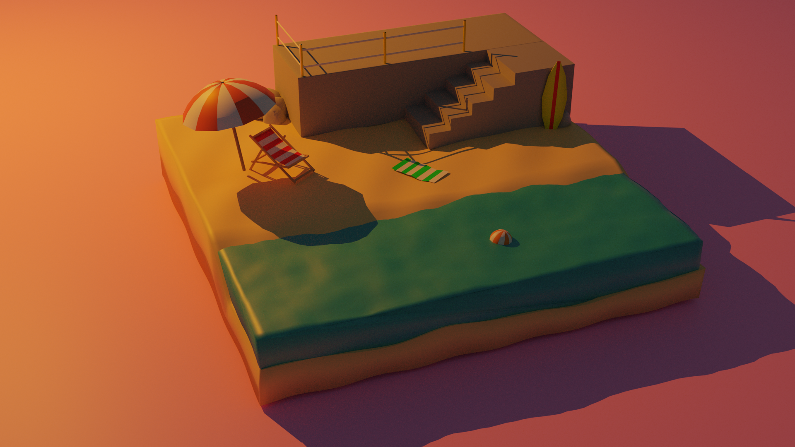
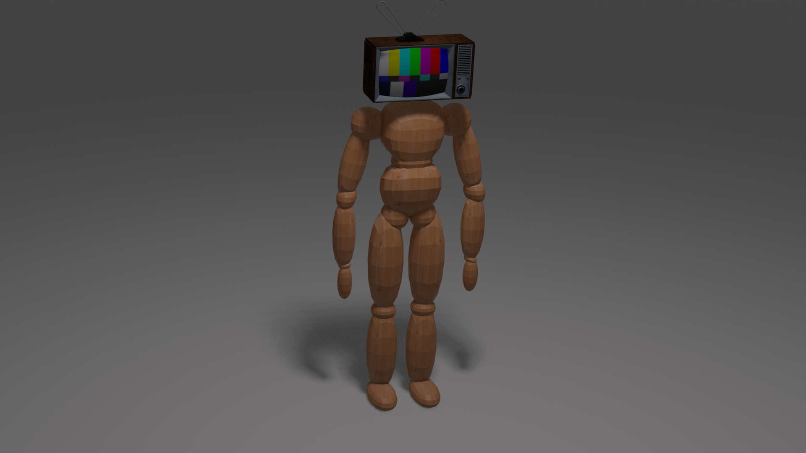

Made by using blender, all modeled by myself.
While making this I wanted to make a simple yet aesthetic looking landscape.
The colors and lighting were also something I aimed to make the landscape more aesthetically pleasing.

This was made using Blender.
The TV model was an asset while the wooden human figure was model by myself.
While making this model I wanted to find a way to symbolize the way people express and look towards other people and how they are a "blank canvas"
"Persona 4 - Television" (https://skfb.ly/6T7YT) by LachlanHall is licensed under Creative Commons Attribution (http://creativecommons.org/licenses/by/4.0/).
My first blender model ever made.
Homepage
Glitched Images Gallery
Photoshop Gallery
Zbrush Gallery
Meme Mash Up Gallery
About Me